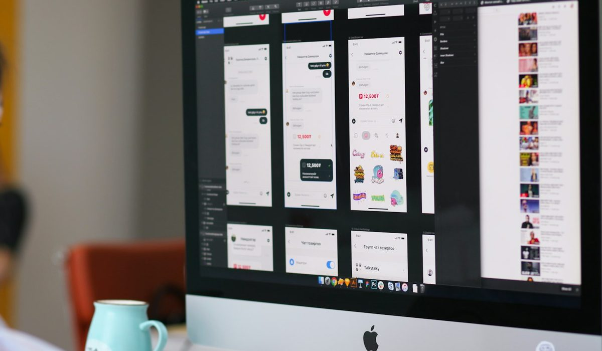

En bref
Pour un auto-entrepreneur, le compte pro le mieux noté en 2026 est Nickel Pro, avec 8,6/10 (relevé de démonstration). Il coûte 50 € par an tout compris, sans condition de chiffre d'affaires, et accepte les espèces en point de vente. Shine suit de près avec 8,3/10 et une formule gratuite, puis N26 Business avec 8,1/10, gratuit lui aussi mais sans encaissement de chèque.
- Un compte bancaire dédié devient obligatoire quand le chiffre d'affaires dépasse 10 000 € deux années civiles consécutives.
- Shine Free et N26 Business Standard sont gratuits, Nickel Pro coûte 50 € par an et Qonto Basic 108 € HT par an.
- Nickel Pro n'exige aucun chiffre d'affaires minimum, mais il n'a ni chéquier ni terminal de paiement.
- Le dépôt de 300 € d'espèces par mois coûte 108 € par an chez Nickel Pro et 180 € chez Shine Free.
Sommaire de ce comparatif
Nos critères et leur poids
Un micro-entrepreneur facture souvent quelques milliers d'euros par an. Un abonnement à 20 € par mois peut alors manger une semaine de marge. Le prix pèse donc plus lourd ici que dans notre classement général des comptes pro, et l'accessibilité suit de près, parce qu'un compte qui réclame un chiffre d'affaires ou un statut de société ne sert à rien.
| Critère | Poids | Ce qu'on regarde |
|---|---|---|
| Prix | 35 % | Coût annuel de la formule d'entrée et frais sur les chèques et les espèces |
| Accessibilité | 25 % | Statut EI accepté, absence de chiffre d'affaires minimum, résidence |
| Services | 25 % | Chèques, espèces, virements, cartes, application |
| Ouverture | 15 % | Pièces demandées et réception de la carte |
| Note globale | Synthèse | La moyenne pondérée des quatre critères, arrondie au dixième |
Poids fixés avant le relevé, identiques pour les huit comptes.
Le classement des 8 comptes pour auto-entrepreneur
01 Le plus accessible50 € par an, sans chiffre d'affaires minimum8,6/10
Le plus accessible50 € par an, sans chiffre d'affaires minimum8,6/10
Le plus accessible50 € par an, sans chiffre d'affaires minimum8,6/1002 Le gratuit polyvalent0 € en Free, chèques et espèces acceptés8,3/10
Le gratuit polyvalent0 € en Free, chèques et espèces acceptés8,3/10
Le gratuit polyvalent0 € en Free, chèques et espèces acceptés8,3/1003 Le gratuit sans fioritures0 € en Standard, réservé aux EI8,1/10
Le gratuit sans fioritures0 € en Standard, réservé aux EI8,1/10
Le gratuit sans fioritures0 € en Standard, réservé aux EI8,1/10Nickel Pro passe devant, de trois dixièmes seulement. Son avance tient à l'accessibilité. Il suffit d'être majeur, de résider en France et d'avoir un SIREN, sans condition de chiffre d'affaires. Le prix, 50 € par an prélevés en une fois, inclut les virements, y compris instantanés, et les prélèvements sans limite. C'est aussi le seul compte du classement où l'on dépose ses espèces chez un buraliste, parmi plus de 8 600 points de vente revendiqués par Nickel.
Shine le talonne et le bat sur le prix d'entrée. Sa formule Free ne coûte rien, encaisse les chèques et accepte les espèces, à des conditions plus chères à l'usage. Shine, passé sous le contrôle de Cegid, revendique plus de 400 000 clients. Ses formules payantes vont de Start à 9 € HT par mois jusqu'à Business à 45 € HT.
N26 Business ferme le podium. Gratuit en Standard, réservé aux micro-entrepreneurs et EI, il fait le travail pour une activité sans papier. Il perd des points sur les chèques, qu'il n'encaisse pas, et c'est rédhibitoire pour un artisan ou un professeur particulier payé par chèque.
Qonto, quatrième, est le plus abouti côté outils, mais 108 € HT par an pèsent lourd sous 10 000 € de chiffre d'affaires. Bourso Business est gratuit tant que le compte enregistre une opération par mois, et c'est le meilleur pour les chèques, encaissés sans frais jusqu'à 1 500 € sur 30 jours glissants. Il ne prend pas d'espèces.
Le bas du classement n'a rien de honteux. La Banque Postale, sixième avec 7,4/10, propose une vraie offre micro-entrepreneur dès 9,80 € TTC par mois et des dépôts au guichet des bureaux de poste, mais elle coûte plus du double de Nickel Pro sur l'année. Revolut Business, septième, a l'application la plus riche du panel, mais 120 € par an pour la formule Basic pèsent sur un petit chiffre d'affaires. Hello Business ferme la marche à 7,0/10, dès 12 € par mois selon les sources tierces, avec l'atout d'une banque du groupe BNP Paribas.
Ce que l'ouverture change
Chez Nickel Pro, l'ouverture se fait entièrement en ligne, avec une pièce d'identité, un SIREN et ses coordonnées, puis la carte arrive par courrier. Rien à voir avec le compte de particulier de la même marque, dont la carte se récupère chez un buraliste. Comptez donc quelques jours avant le premier paiement par carte. Pour un micro-entrepreneur qui démarre, le plus simple reste d'ouvrir le compte dès la réception du SIREN, avant la première facture.
Le tableau comparatif des 8 comptes
Le tableau reprend la formule d'entrée de chaque compte, celle qu'un micro-entrepreneur ouvre en premier. « Non publié » signifie que le tarif ne figure pas dans la plaquette tarifaire lue, pas que le service n'existe pas.
| Compte | Note /10 | Prix d'entrée sur un an | Dépôt d'espèces | Chèques | Le point fort |
|---|---|---|---|---|---|
| Nickel ProNotre choix | 8,6 | 50 € | 3 % en point de vente | Encaissement à 3 €, pas de chéquier | Aucune condition de chiffre d'affaires |
| Shine | 8,3 | 0 € en Free | De 2 à 5 % selon la formule | 2 € HT, 5 € HT en Free | Gratuit, espèces acceptées |
| N26 Business | 8,1 | 0 € en Standard | Non publié | Pas d'encaissement | Pensé pour les micro-entrepreneurs et EI |
| Qonto | 8,0 | 108 € HT | Non publié | Par courrier, 2 € l'unité en Basic | Les outils de gestion |
| Bourso Business | 7,8 | 0 € avec 1 opération par mois | Pas de dépôt | Gratuit jusqu'à 1 500 € sur 30 jours | Les chèques sans frais |
| La Banque Postale | 7,4 | 117,60 € TTC | En bureau de poste, tarif non publié | Non publié | Une offre micro-entrepreneur en banque |
| Revolut Business | 7,2 | 120 € | Non publié | Non publié | L'application la plus riche |
| Hello Business | 7,0 | Dès 144 € | Non publié | Non publié | Une banque du groupe BNP Paribas |
Formule d'entrée de chaque compte, facturation annuelle quand elle existe, hors promotion. Tarifs Bourso Business, Revolut Business et Hello Business repris de sources tierces. Notes et tarifs, relevé de démonstration de la rédaction, octobre 2026.
Nickel Pro perd clairement sur deux colonnes. Il n'est pas gratuit, trois comptes du tableau font mieux à 0 €, et il n'a pas de chéquier. Il ne propose pas non plus de terminal de paiement, l'encaissement par carte étant seulement annoncé « dans les mois à venir ». Son application reste moins riche que celle de Revolut Business ou de Qonto.
Combien coûte vraiment un compte pro à l'usage
Le prix d'entrée ne dit pas tout. Un compte gratuit qui facture 5 € le chèque devient cher pour une activité payée par chèque. Voici le coût annuel de trois profils types de micro-entrepreneur.
| Compte | Montant sans chèque ni espèces | Avec 1 chèque par mois | Avec 300 € d'espèces par mois |
|---|---|---|---|
| Nickel Pro | 50 € | 86 € | 158 € |
| Shine Free | 0 € | 60 € HT | 180 € |
| Shine Start | 108 € HT | 132 € HT | 216 € HT |
| N26 Business Standard | 0 € | Impossible | Non publié |
| Qonto Basic | 108 € HT | 132 € HT | Non publié |
| Bourso Business | 0 € | 0 € | Impossible |
| La Banque Postale | 117,60 € TTC | Non publié | Non publié |
Coût sur un an, abonnement compris. Bourso Business gratuit à condition d'au moins une opération par mois, sinon 9 € par mois. Notes et tarifs, relevé de démonstration de la rédaction, octobre 2026.
Pour un consultant payé par virement, rien ne bat un compte gratuit, Shine Free, N26 Business ou Bourso Business. Dès qu'un chèque arrive chaque mois, Bourso Business reste à zéro et Shine Free grimpe à 60 € HT. C'est sur les espèces que l'écart se creuse en faveur de Nickel Pro. À 300 € déposés par mois, il coûte 158 € sur l'année contre 180 € pour Shine Free et 216 € HT pour Shine Start.
Avant de choisir, regardez vos six derniers mois de recettes. La part payée en chèque et en espèces vaut plus que n'importe quel prix d'abonnement.
Un compte pro est-il obligatoire pour un micro-entrepreneur
Pas tout de suite. La loi PACTE impose un compte bancaire dédié à l'activité quand le chiffre d'affaires dépasse 10 000 € deux années civiles consécutives. L'ancien seuil était de 5 000 €. En dessous, un compte personnel suffit. Beaucoup de micro-entrepreneurs ouvrent pourtant un compte séparé dès la première année. Le calcul des cotisations sur le chiffre d'affaires encaissé devient plus simple quand rien d'autre ne transite sur le compte.
Dédié ne veut pas dire professionnel. Un second compte de particulier, réservé aux recettes et aux dépenses de l'activité, remplit l'obligation. Le compte pro devient intéressant pour l'IBAN au nom de l'entreprise, l'export comptable et l'encaissement des chèques libellés à ce nom.

Nickel Pro, Shine ou N26 Business, comment choisir
Vous êtes payé surtout par virement
Prenez N26 Business Standard ou Shine Free. Les deux sont gratuits et suffisent pour encaisser des virements de clients et payer vos fournisseurs.
Vous recevez des chèques chaque mois
Bourso Business, si votre compte enregistre au moins une opération par mois. Sinon Shine, dont le chèque passe à 2 € HT dès la formule Start, ou Nickel Pro à 3 € l'encaissement.
Vous encaissez des espèces
Nickel Pro. Le dépôt se fait chez un buraliste, à 3 % du montant, jusqu'à 950 € par jour et 5 000 € par mois. Au-delà de quelques milliers d'euros par mois, regardez les formules hautes de Shine, moins chères en pourcentage.
Vous voulez une vraie banque
La Banque Postale, dès 9,80 € TTC par mois, ou Hello Business dès 12 € par mois. Plus chers, mais adossés à un établissement bancaire et pas à un établissement de paiement.
Notre verdict
Pour un auto-entrepreneur, Nickel Pro est le compte le mieux noté de 2026 avec 8,6/10. Il gagne sur l'accessibilité et sur les espèces, et perd sur le prix face aux formules gratuites, sur les chèques et sur l'équipement.
Si votre priorité est de ne rien payer et que vos clients règlent par virement, prenez N26 Business ou Shine Free. Si vous recevez beaucoup de chèques, prenez Bourso Business. Si vous déposez des espèces ou voulez un prix fixe sans condition, prenez Nickel Pro.
Questions fréquentes
Quel est le meilleur compte pro pour un auto-entrepreneur en 2026 ?
Nickel Pro obtient la meilleure note de notre comparatif avec 8,6/10, pour un prix fixe de 50 € par an et l'absence de condition de chiffre d'affaires. Shine suit avec 8,3/10 et N26 Business avec 8,1/10, tous deux gratuits en formule d'entrée.
Un auto-entrepreneur doit-il ouvrir un compte pro ?
Un compte dédié devient obligatoire quand le chiffre d'affaires dépasse 10 000 € deux années civiles consécutives, selon la loi PACTE. Ce compte peut être un second compte de particulier réservé à l'activité, il n'a pas à être un compte pro.
Existe-t-il un compte pro gratuit pour auto-entrepreneur ?
Oui. Shine Free et N26 Business Standard sont à 0 €, et Bourso Business est gratuit à condition d'au moins une opération par mois, sinon 9 € par mois. N26 Business n'encaisse pas les chèques et Bourso Business ne prend pas d'espèces.
Nickel Pro accepte-t-il les auto-entrepreneurs ?
Oui. Nickel Pro est ouvert aux micro-entrepreneurs, EI, artisans, commerçants, libéraux et freelances majeurs résidant en France, sans condition de chiffre d'affaires, pour 50 € par an. Les SASU et les EURL en sont exclues.
Où un auto-entrepreneur peut-il déposer des espèces ?
Nickel Pro accepte les dépôts dans plus de 8 600 points de vente revendiqués, pour 3 % du montant. Shine facture de 2 à 5 % selon la formule et La Banque Postale accepte les dépôts en bureau de poste. Bourso Business ne prend pas d'espèces.
Comment sont notés les comptes ?
Les notes sont un relevé de démonstration de la rédaction, établi sur cinq critères, l'accessibilité, le prix, l'ouverture, les services et une note globale. Dans ce comparatif, le prix pèse 35 %, l'accessibilité 25 %, les services 25 % et l'ouverture 15 %, la note globale étant leur moyenne pondérée.
Notre méthode
Ce comparatif repose sur des données publiques, vérifiables une par une, et sur des critères affichés avant le classement.
- Les tarifs sont relevés dans les plaquettes tarifaires et les pages officielles des établissements, frais de tenue de compte et de carte compris
- Les conditions d'ouverture (revenus, âge, justificatifs, délai) sont vérifiées sur le parcours d'ouverture de chaque offre
- Les plafonds réglementaires (frais d'incident, offre clientèle fragile, droit au compte) sont ceux publiés par la Banque de France et service-public.fr
- Les avis clients sont lus sur les stores d'applications et Trustpilot, en retenant les motifs récurrents plutôt que la note seule
- Chaque critère est noté sur 10 et la grille de notation est identique d'un comparatif à l'autre